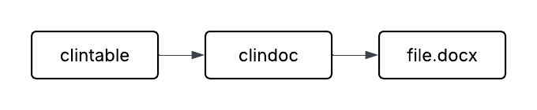
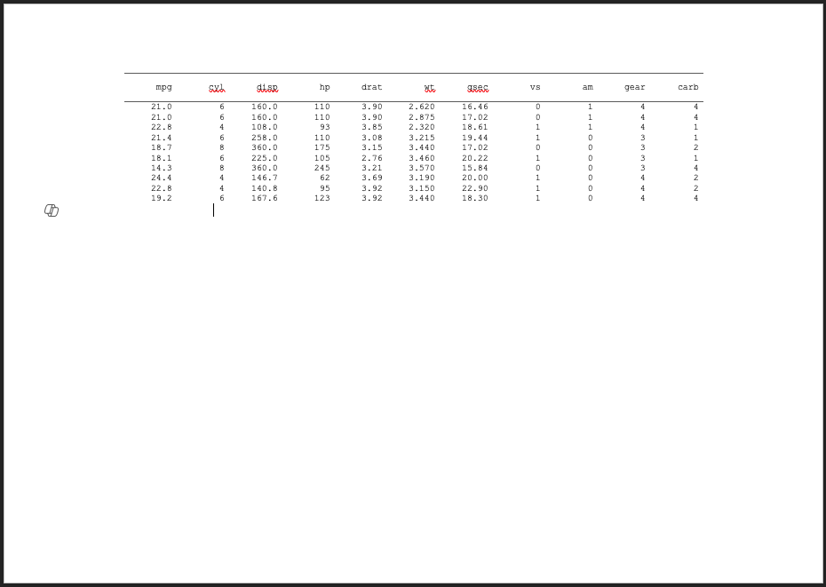
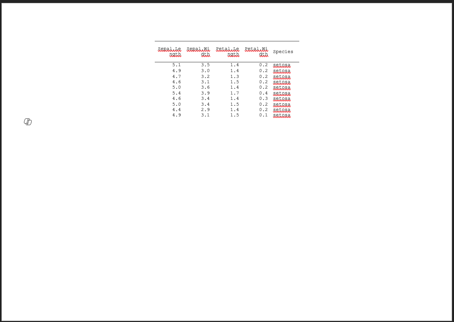
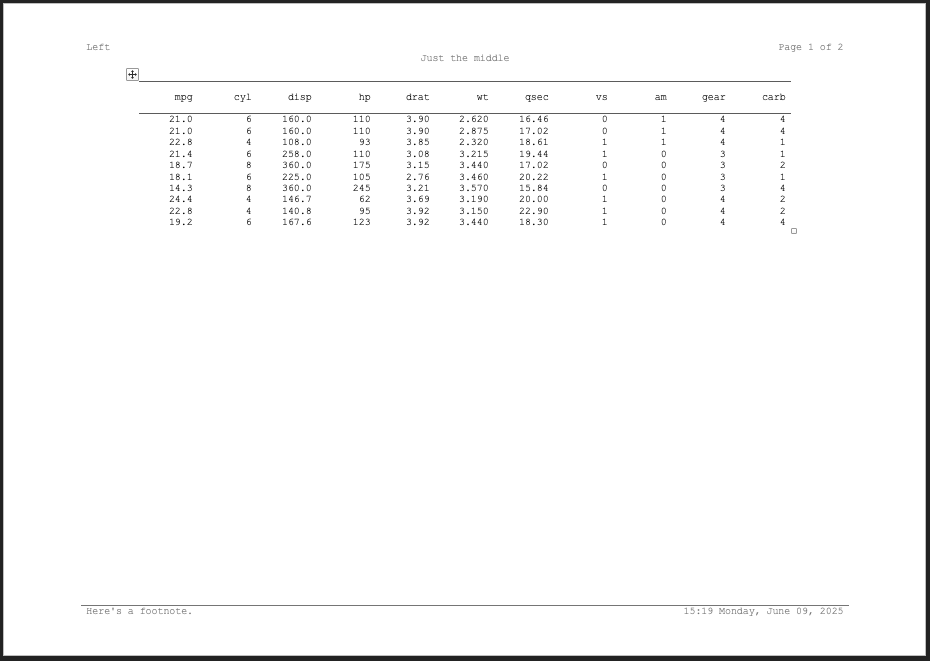
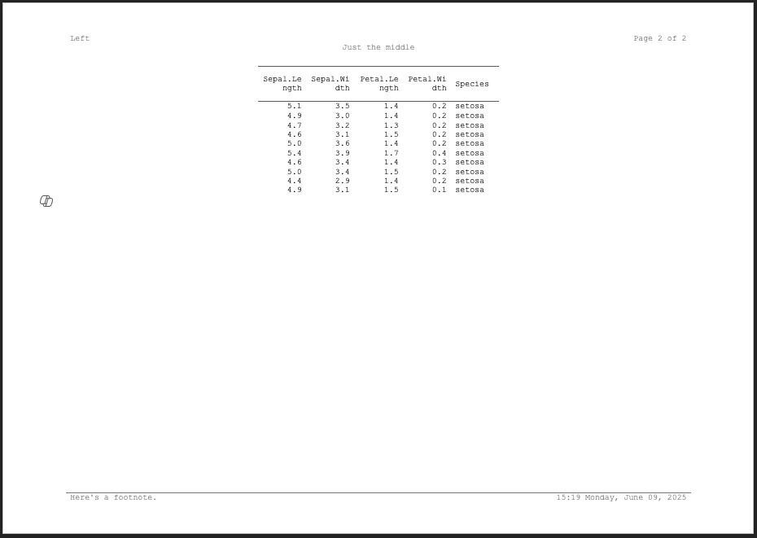

In most simple cases once you generate a clintable
object and style it, you can just write it to disk. To do this, you can
use the function write_clindoc().
library(clinify)
ct <- clintable(mtcars)
write_clindoc(ct, file = tempfile(fileext = ".docx"))That said, not all cases are simple. The general flow of writing out a table using clinify looks like this:

When you supply a clintable into
write_clindoc(), the conversion into a clindoc
object happens for you. But you can also create a clindoc on your
own.
library(clinify)
ct <- clintable(mtcars)
doc <- clindoc(ct)
write_clindoc(doc, file = tempfile(fileext = ".docx"))In normal cases, this isn’t really necessary and converting the object yourself doesn’t add any benefit. The primary use case for this is for rare circumstances where you may have tables that require different column headers for different sections of data. Consider the following:
ct1 <- clintable(head(mtcars, 10))
ct2 <- clintable(head(iris, 10))
doc <- clindoc(ct1, ct2)
write_clindoc(doc, file = tempfile(fileext = ".docx"))

This can alternatively be passed as a list of clintable
objects instead of different arguments, which is much more convenient if
you’re generating tables using lapply() or {purrr}
ct1 <- clintable(head(mtcars, 10))
ct2 <- clintable(head(iris, 10))
doc <- clindoc(list(ct1, ct2))
write_clindoc(doc, file = tempfile(fileext = ".docx"))When creating tables this way, titles and footnotes should be applied
directly to the clindoc object using
clin_add_title(), clin_add_footnote(), or
clin_add_footnote_page(). Title and footnote information on
the individual clintable objects will be ignored. We handle
it this way for a few reasons:
- It would be tedious and redundant to apply the same titles and footnotes to each individual table
- Within the word document, titles and footnotes are applied to the default section of the document. They’re specified once and then word applies them to each page.
- From a user perspective, taking them from one single table, for example, the first of the list, would mean specifying one table different than the rest - which would be a clunky user interface.
As such, the clin_add_title(),
clin_add_footnote(), and
clin_add_footnote_page() functions work on
clindoc objects identically to a
clintable.
tables <- lapply(list(mtcars, iris), \(x) clintable(head(x, 10)))
doc <- clindoc(tables) |>
clin_add_titles(
list(
c("Left", "Page {PAGE} of {NUMPAGES}"),
c("Just the middle")
)
) |>
clin_add_footnotes(
list(
c(
"Here's a footnote.",
format(Sys.time(), "%H:%M %A, %B %d, %Y")
)
)
)
write_clindoc(doc, file = tempfile(fileext = ".docx"))
